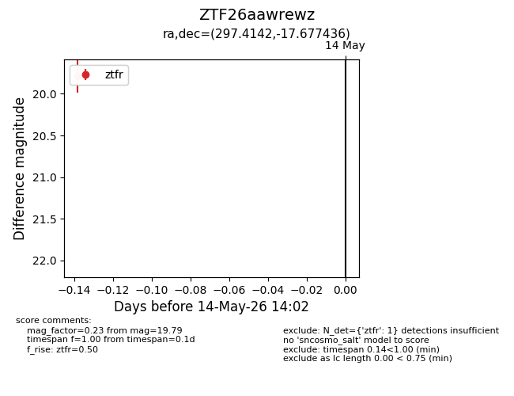
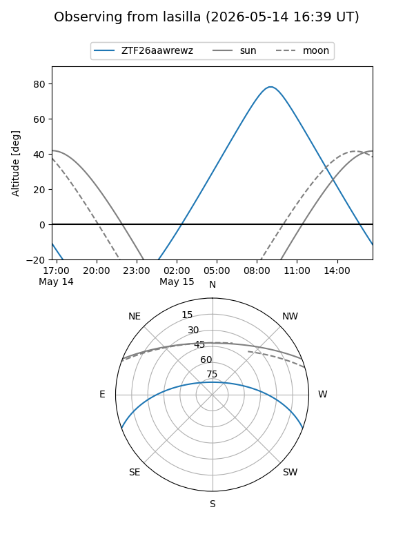
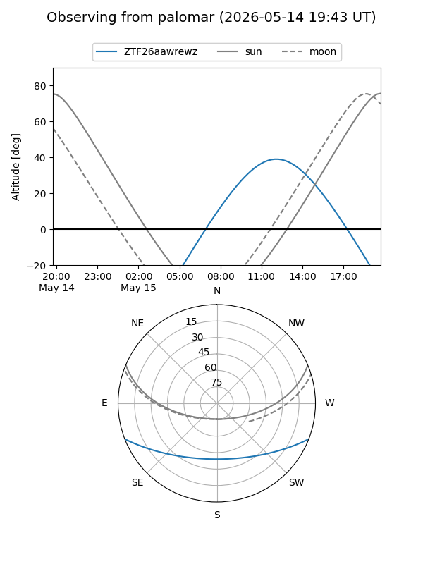

ZTF26aawrewz
Target ZTF26aawrewz at 2026-05-14 14:04
Aliases and brokers:
FINK: link
Lasair: link
ALeRCE: link
alt names
ZTF26aawrewz (ztf,fink_ztf)
Coordinates:
equatorial (ra, dec) = 297.4142,-17.67744
equatorial (HMS+DMS) = 19:49:39.41,-17:40:38.77
galactic (l, b) = (23.0246,-20.58279)
Flags:
Photometry:
last ztfr=19.79
1 ztfr detections
Lightcurve

Visibility


Additional plots